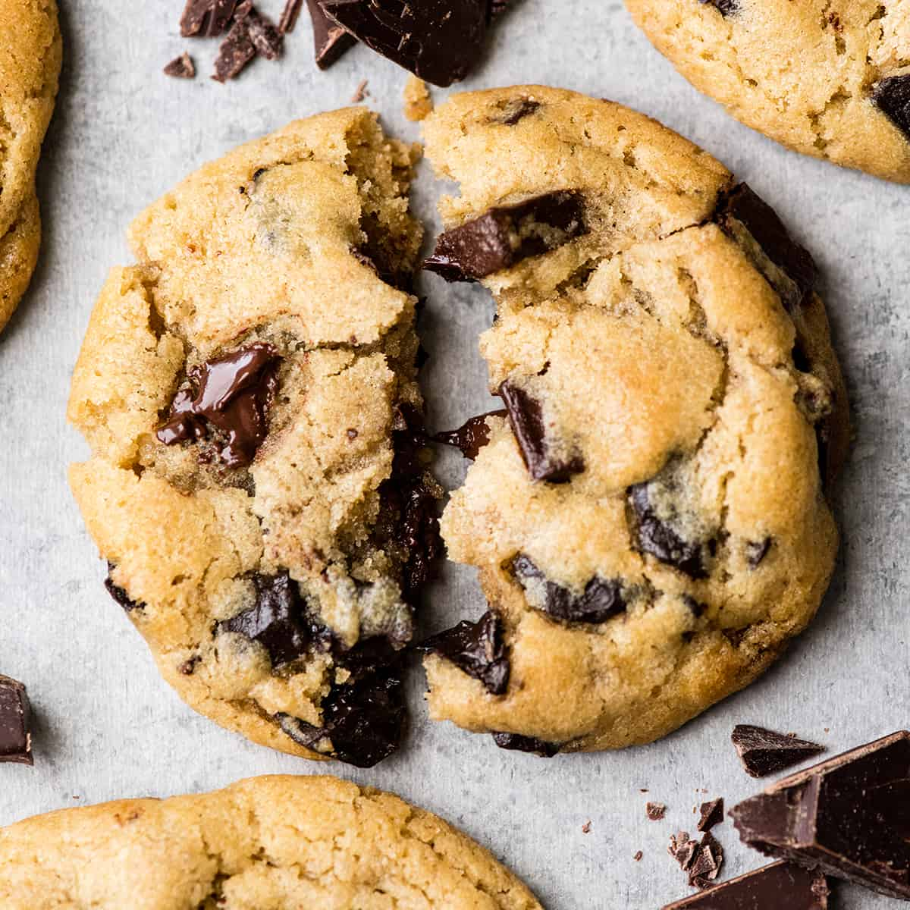

Overview
Chocolate chip cookies are a food that many people all over the world enjoy. There are many recipes all over the internet and in cookbooks, but this one is my favourite. This is a nice and simple recipe to make cookies that taste great and are very quick to make.

Ingredients
- ½ cups butter
- ½ cups granulated sugar
- ¼ cups brown sugar
- 2 tsp vanilla extract
- 1 large egg
- 1¾ cups flour
- ½ tsp baking soda
- ½ tsp salt
- 1 cup chocolate chips
Instructions
- Melt the butter.
- Mix in the sugar in with the butter until they combine.
- Mix in the vanilla extract and the egg.
- Add in the flour, salt, and baking soda. Mix until combined (don't overmix).
- Stir the chocolate chips into the dough, then scoop the dough onto a baking sheet and form balls of dough 2 inches apart from one another.
- Bake until the cookies are set on the edges. Usually this will take around 8-10 minutes.